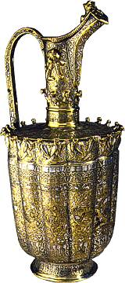

|
|
NewsArabic Script: Arabic is now the most commonly written script after the Roman alphabet. This tour celebrates the use and spread of this beautiful art form. Osman Waqialla, Kaf ha ya ayn sadd, a calligraphic page
|
Daily eyeOpener tours of the John Addis Gallery of Islamic art (room 34) offer an introduction to the museum's collection of Islamic art, including objects from the earliest centuries of Islam to the 20thc, and geographically from Egypt to India. In addition, more in depth gallery talks may be found in the monthly events diary.
A printed gallery guide is also available (Arabic version is forthcoming.)
|
 High-spouted brass ewer, from Herat, Afghanistan, AD 1180-1200 |
|||
|
home |
visit |
what's on |
join |
shop |
learning |
COMPASS |
world cultures |
sitemap |
contact us |
copyright
© The British Museum, 2002 |
|||||